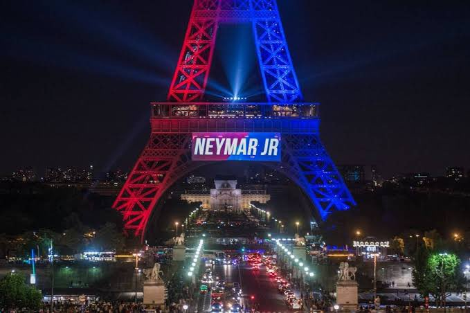

Paris não é só uma das cidades mais visitadas na Europa, como também no mundo todo. Um dos grandes motivos para isso é a Torre Eiffiel que é um dos grandes pontos turísticos mundiais.
Ela foi construída de 1887 a 1889 como a peça central da Exposição Universal de 1889 e foi inicialmente criticada por alguns dos principais artistas e intelectuais franceses por seu design, mas tornou-se um ícone cultural global da França e uma das estruturas mais reconhecidas do mundo. Se tornou o monumento pago mais visitado do mundo, em 2015 6,91 milhões de pessoas subiram na torre. Foi designado um monumento histórico em 1964 e foi nomeado parte do Patrimônio Mundial pela UNESCO em 1991. A torre tem 330 metros de altura, aproximadamente a mesma altura de um edifício de 81 andares, e é a estrutura mais alta de Paris. Sua base é quadrada, medindo 125 metros de cada lado. Durante sua construção, a Torre Eiffel ultrapassou o Monumento de Washington para se tornar a estrutura mais alta do mundo feita pelo homem, título que manteve por 41 anos até que o Edifício Chrysler em Nova York foi concluído em 1930. Foi a primeira estrutura do mundo mundo a ultrapassar a marca dos 200 e 300 metros de altura.
Exceto para aqueles que sofram de vertigem, subir na Torre Efiffel é uma experiência única e praticamente obrigatória para todos os visitantes de Paris. É possível ter acesso à torre tanto de elevador como pelas escadas, embora antes de se decidir é importante que você saiba que são 1.665 degraus. Utilizando as escadas, só é possível subir até os dois primeiros andares da torre. Embora o preço para subir de escada seja um pouco mais barato, a não ser que seja uma aposta, não vale a pena. Os melhores momentos para subir na torre são no início da manhã, quando ainda não há filas intermináveis, ou ao anoitecer, para desfrutar da cidade das luzes em todo o seu esplendor.
Ingressos
Se você quer evitar as enormes filas da bilheteria da Torre Eiffel, a melhor opção é comprar o ingresso online. Comprando diretamente no site da Torre Eiffel você conseguirá o melhor preço. No entanto, se já não há mais ingressos no site oficial, você pode reservar a visita guiada conosco e também não enfrentará as filas.
Preço:
- Adultos:
Elevador ao 2º andar: €17,10 (R$90,10).
Elevador ao andar superior: €26,80 (R$141,20).
Subir por escadas ao 2º andar: €10,70 (R$56,30).
Escadas + elevador: €20,40 (R$107,50).
- Jovens entre 12 e 24 anos: Elevador ao 2º andar: €8,60 (R$45,30). Elevador ao andar superior: €13,40 (R$70,60). Subir por escadas ao 2º andar: €5,40 (R$28,40). Escadas + elevador: €10,20 (R$53,70).
- Crianças de 4 a 11 anos: Elevador ao 2º andar: €4,30 (R$22,60). Elevador ao andar superior: €6,70 (R$35,30). Subir por escadas ao 2º andar: €2,70 (R$14,20). Escadas + elevador: €5,10 (R$26,80).
- Menores de 4 anos: Entrada gratuita.
- Visita guiada à Torre Eiffel €36 (R$189,70)
O jogador brasileiro Neymar Jr foi a única pessoa até hoje a ter seu nome homenageado na Torre Eiffiel, na sua apresentação ao time da cidade, o Paris Saint-Germain Football Club (PSG) em 2017.
